정보처리기능사 (2003-10-05 기출문제)
1과목: 전자 계산기 일반
1. 클록펄스(Clock Pulse)에 의해서 기억 내용을 한자리씩 이동하는 레지스터는?
- 시프트레지스터
- B레지스터
- 누산기
- D레지스터
(정답률: 88%)

2. 다른 모든 플립플롭의 기능을 대용할 수 있으므로 응용 범위가 넓고 집적회로화 되어, 가장 널리 사용되는 플립플롭은?
- T 플립플롭
- JK 플립플롭
- D 플립플롭
- RS 플립플롭
(정답률: 77%)
3. 명령어의 구성이 연산자부에 3bit, 주소부에 5bit로 되어 있을 때, 이 명령어를 사용하는 컴퓨터는 최대 몇 가지의 동작이 가능한가?
- 256
- 32
- 16
- 8
(정답률: 72%)
4. EBCDIC 코드의 존(Zone) 코드는 몇 비트로 구성되어 있는가?
- 4
- 7
- 8
- 6
(정답률: 80%)
5. 에러를 검출하고 검출된 에러를 교정하기 위하여 사용되는 코드는?
- ASCII 코드
- BCD 코드
- 8421 코드
- Hamming 코드
(정답률: 86%)
6. 원판형의 자기디스크 장치에서 하나의 원으로 구성된 기억공간으로, 원판형을 따라 동심원으로 나눈 것은?
- 릴(Reel)
- 실린더(Cylinder)
- 트랙(Track)
- 헤드(Head)
(정답률: 77%)
7. 2진수 10110를 1의 보수(1'Complement)로 표현한 것은?
- 01001
- 00110
- 01000
- 11110
(정답률: 84%)
8. 다음 그림의 Gate 는 어느 회로인가?
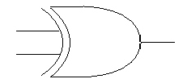
- Exclusive-NOR
- Exclusive-OR
- Exclusive-AND
- OR
(정답률: 77%)
9. 다음 중 Random Access와 관계없는 것은?
- 프로그램이나 자료를 준비하는데 편리하다.
- 사용 빈도에 제한이 없다.
- 기억공간을 절약할 수 있다.
- 순서적 처리를 한다.
(정답률: 54%)
10. 진리표가 다음 표와 같이 되는 논리회로는?
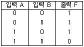
- NAND 게이트
- AND 게이트
- NOR 게이트
- OR 게이트
(정답률: 76%)
11. 8비트짜리 레지스터 A와 B에 각각 “11010101”과 “11110000”이 들어 있다. 레지스터 A의 내용이 “00100101”로 바뀌었다면 두 레지스터 A, B사이에 수행된 논리 연산은?
- Exclusive-OR 연산
- AND 연산
- NOR 연산
- OR 연산
(정답률: 67%)
12. 컴퓨터에 의하여 다음에 실행될 명령어의 주소가 저장되어 있는 기억 장소는?
- 명령어 레지스터(Instruction Register)
- 메모리 레지스터(Memory Register)
- 인덱스 레지스터(Index Register)
- 프로그램 카운터(Program Counter)
(정답률: 56%)
13. ROM(Read Only Memory)에 대한 옳은 설명은?
- 데이터를 읽고 기록하는 것 모두 가능하다.
- 데이터를 기록하는 것만 가능하다.
- 데이터를 읽고 기록하는 것 모두 불가능하다.
- 데이터를 읽어내는 것만 가능하다.
(정답률: 72%)
14. RS Flip-Flop 회로의 동작에서 R=1, S=1을 입력했을 때의 옳은 출력은?
- 부정(Not Allowed)
- 0
- 1
- 변화없음(No Change)
(정답률: 63%)
15.
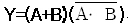
와 같은 논리식은?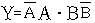
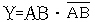
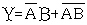
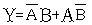
(정답률: 52%)
16. 특정 비트 또는 특정 문자를 삭제하기 위해 사용하는 연산은?
- AND 연산
- Complement 연산
- MOVE 연산
- OR 연산
(정답률: 56%)
17. 기억장치 고유의 번지로서 0,1,2,3....과 같이 16진수로 약속하여 순서대로 결정해 놓은 번지, 즉 기억장치 중의 기억장소를 직접 숫자로 지정하는 주소로서 기계어 정보가 기억되어 있는 번지는?
- 변위번지
- 기호번지
- 절대번지
- 상대번지
(정답률: 83%)
18. 0-주소 명령은 연산시 어떤 자료 구조를 이용하는가?
- QUEUE
- DEQUE
- STACK
- TREE
(정답률: 84%)
19. 연산 작업을 할 때, 연산의 중간 결과나 데이터 저장시 레지스터를 사용하는 주된 이유는?
- 기억 장소를 절약하기 위하여
- 연산 속도 향상을 위하여
- 연산의 정확성을 위하여
- 인터럽트 요청을 방지하기 위하여
(정답률: 74%)
20. 기계어의 Operand에는 주로 어떤 내용이 들어 있는가?
- Op-Code
- Register 번호
- Address
- Data
(정답률: 61%)
2과목: 패키지 활용
21. Windows용 프리젠테이션에서 화면 전체를 전환하는 단위를 의미하는 것은?
- 개요
- 개체
- 스크린 팁
- 쪽(슬라이드)
(정답률: 85%)
22. Windows용 프리젠테이션 프로그램의 사용 용도로 거리가 먼 것은?
- 회사 설명회
- 신제품 발표회
- 교육자료 제작
- 통계자료 작성
(정답률: 82%)
23. 테이블에서 각 레코드를 식별할 수 있는 유일한 값을 갖는 필드를 무엇이라 하는가?
- 기본키
- 레코드
- 블록
- 파일
(정답률: 50%)
24. 수치 계산과 관련된 업무에서 계산의 어려움과 비효율성을 개선하여 전표의 작성, 처리, 관리를 쉽게 할 수 있도록 한 것은?
- 데이터베이스
- 스프레드시트
- 워드프로세서
- 프리젠테이션
(정답률: 77%)
25. 데이터베이스와 관련된 설명으로 거리가 먼 것은?
- 효율적이고 체계적인 데이터의 관리를 지원
- 데이터의 중복성을 최소화하면서 일관성을 가진 데이터 처리 지원
- 파일 시스템의 단점을 극복하여 데이터 독립성 제공
- 하드웨어의 비용절감을 위한 방법으로 등장
(정답률: 57%)
26. SQL의 SELECT 문에서 특정열의 값을 기준으로 정렬할 때 사용하는 절은?
- ORDER TO절
- ORDER BY절
- SORT BY절
- SORT절
(정답률: 79%)
27. 사원(사원번호, 이름) 테이블에서 “사원번호”가 “200” 인 튜플을 삭제하는 SQL 문은?
- DELETE FROM 사원 WHERE 사원번호 = 200 ;
- REMOVE TABLE 사원 WHERE 사원번호 = 200 ;
- DELETE, 사원번호, 이름 FROM 사원 WHERE 사원번호 = 200 ;
- DROP TABLE 사원 WHERE 사원번호 = 200 ;
(정답률: 56%)
28. 테이블 구조 변경시 사용하는 SQL 명령은?
- CREATE TABLE
- ALTER TABLE
- DROP TABLE
- INSERT TABLE
(정답률: 72%)
29. 데이터베이스 관리 시스템(DBMS)의 필수 기능에 해당하지 않는 것은?
- 제어기능
- 처리기능
- 조작기능
- 정의기능
(정답률: 72%)
30. 다음 SQL 검색문의 의미로 옳은 것은?
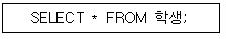
- 학생 테이블에서 “*” 값이 포함된 레코드의 모든 필드를 검색하라.
- 학생 테이블에서 전체 레코드의 모든 필드를 검색하라.
- 학생 테이블에서 첫 번째 레코드의 모든 필드를 검색하라.
- 학생 테이블에서 마지막 레코드의 모든 필드를 검색하라.
(정답률: 75%)
3과목: PC 운영 체제
31. 컴퓨터 시스템의 성능을 최적화 하기 위하여 사용되는 운영체제의 기능과 거리가 먼 것은?
- 이식성 기능
- 인터페이스 기능
- 시스템 비보호 기능
- 초기설정 기능
(정답률: 67%)
32. “Windows 98”에서 디스켓을 포맷할 때 포맷 형식으로 선택할 수 없는 것은?
- 빠른 포맷
- 삭제된 파일 복구
- 시스템 파일만 복사
- 전체
(정답률: 59%)
33. “Windows 98”에서 클립보드(CLIPBOARD)의 역할은?
- 프로그램간에 전송되는 자료를 일시적으로 보관하여 준다.
- 그래픽 영역을 설정해 준다.
- 도스 영역을 확보해 준다.
- 네트워크 환경을 자동으로 설정해 준다.
(정답률: 79%)
34. 스풀링과 버퍼링에 대한 설명 중 옳지 않은 것은?
- 버퍼링은 송신자와 수신자의 속도 차이를 해결하기 위하여 사용한다.
- 버퍼링은 주기억장치의 일부를 버퍼로 사용한다.
- 스풀링은 저속의 입·출력장치와 고속의 CPU간의 속도 차이를 해소하기 위한 방법이다.
- 버퍼링은 서로 다른 여러 작업에 대한 입·출력과 계산을 동시에 수행한다.
(정답률: 59%)
35. “Windows 98”에서 아래 설명에 해당하는 것은?
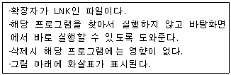
- 폴더
- 아이콘
- 단축아이콘
- 작업표시줄
(정답률: 71%)
36. “Windows 98”에서 여러 개의 응용 프로그램을 순서대로 전환할 때 사용하는 단축키는?
- Atl + F1
- Alt + Tab
- Alt + Enter
- Alt + Shift
(정답률: 73%)
37. UNIX에서 현재 실행중인 프로세스를 삭제하기 위한 명령어는?
- stop
- kill
- dd
- del
(정답률: 64%)
38. “Windows 98”에서 하드디스크에 있는 파일을 휴지통에 버리지 않고 바로 삭제하려고 한다. 파일 선택 후 어떤 키를 눌러야 하는가?
- Ctrl + Delete
- Delete
- Shift + Delete
- Alt + Delete
(정답률: 71%)
39. 온라인 실시간 시스템의 조회 방식에 적합한 업무는?
- 성적 처리 업무
- 좌석 예약 업무
- 봉급 계산 업무
- 객관식 채점업무
(정답률: 81%)
40. 도스(MS-DOS)에서 파일의 이름을 알파벳순으로 표시하는 명령어는?
- DIR/OD
- DIR/OS
- DIR/OA
- DIR/ON
(정답률: 52%)
41. “Windows 98”에서 “시스템 도구” 메뉴에 포함되지 않는 것은?
- 디스크 포맷
- 디스크 조각 모음
- 디스크 검사
- 디스크 정리
(정답률: 55%)
42. “Windows 98”의 탐색기에서 할 수 있는 작업과 거리가 먼 것은?
- 디스크 공간 확인
- 디스켓 포맷
- 폴더 공유
- 시스템의 글꼴 변경
(정답률: 55%)
43. “Windows 98”의 제어판에서 시동 디스크를 만들려면 어떤 항목을 선택하여야 되는가?
- 시스템
- 내게 필요한 옵션
- 사용자
- 프로그램 추가/제거
(정답률: 62%)
44. 유닉스에서 네트워크상의 문제를 진단할 수 있는 명령어는?
- talk
- ping
- who
- rlogin
(정답률: 78%)
45. “Windows 98”에서 클립보드에 현재 화면에서 활성 윈도우를 복사하는 기능키는?
- Ctrl + Print Screen
- Alt + Print Screen
- Ctrl + V
- Ctrl + C
(정답률: 46%)
46. 다음 괄호 안에 가장 알맞은 단어는?
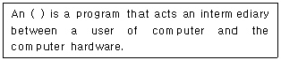
- GUI
- Operating System
- File System
- Interpreter
(정답률: 70%)
47. 시스템의 날짜를 변경하거나, 확인할 수 있는 DOS의 명령어는?
- DATE
- MD
- DEL
- TIME
(정답률: 70%)
48. “Windows 98”의 휴지통에 대한 설명으로 옳지 않은 것은?
- 파일 삭제시 휴지통에 보관하지 않고 즉시 삭제할지의 여부를 지정할 수 있다.
- 휴지통의 크기를 변경시킬 수 없다.
- 파일 삭제시 삭제확인 메시지를 보이지 않게 지정 할 수 있다.
- 삭제한 파일을 임시 저장하며 삭제한 파일을 복구 할 수 있다.
(정답률: 71%)
49. “Windows 98”의 탐색기에서 마우스의 오른쪽 단추를 누르는 것과 같은 기능이 나타나게 하는 단축키는?
- F9
- Ctrl + F10
- Alt + F10
- Shift + F10
(정답률: 50%)
50. 아래 내용이 설명하는 “Windows 98” 의 기능은?
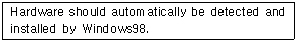
- PnP(Plug and Play)
- Drag and Drop
- DMA(Direct Memory Access)
- OLE(Object Linking and Embedding)
(정답률: 65%)
4과목: 정보 통신 일반
51. 위상이 일정하고 진폭이 0[V]와 5[V] 2가지 변화로써 신호를 1200보오[Baud]의 속도로 전송할 때 매초당 비트수 [bps]는?
- 2400
- 1200
- 4800
- 9600
(정답률: 37%)
52. 다음 그림은 어떤 변조 방법을 나타낸 것인가?
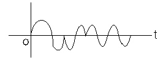
- 진폭변조
- 주파수변조
- 위상변조
- 펄스변조
(정답률: 31%)
53. EIA RS-232C DTE 접속장치의 핀은 모두 몇 개인가?
- 25
- 8
- 16
- 32
(정답률: 47%)
54. 비디오텍스(Videotex)에 관한 설명으로 거리가 먼 것은?
- 컴퓨터를 사용해서 데이터베이스에 축적된 영상정보를 전화망을 통해 TV수상기에 전달한다.
- 컴퓨터에 관한 지식이 없는 일반 사용자라도 일기, 물가, 뉴스, 예약, 쇼핑 등 광범위한 서비스를 제공받을 수 있다.
- 신문, 방송 등 기존의 대중통신매체를 개발한 회화형 영상정보 시스템이다.
- 정보처리기술과 통신처리기술이 결합된 새로운 단방향 음성정보 전달수단이다.
(정답률: 39%)
55. 데이터통신의 스위칭(교환)방식에 해당되지 않는 것은?
- 회선스위칭(Circuit Switching)
- 수동스위칭(Passive Switching)
- 메시지스위칭(Message Switching)
- 패킷스위칭(Packet Switching)
(정답률: 51%)
56. 양쪽방향으로 동시에 전송이 가능한 경우의 통신 방식은?
- 전이중통신(Full duplex)
- 라디오(Radio)
- 단향통신(Simplex)
- 반이중통신(Half duplex)
(정답률: 70%)
57. ISO의 OSI 참조 모델의 최상위 계층은?
- 네트워크층
- 응용계층
- 물리계층
- 전송계층
(정답률: 50%)
58. 다음 중 정보통신의 특징에 속하지 않는 것은?
- 취급하는 정보를 기계(컴퓨터)로 처리가 가능하다.
- 소프트웨어 기술을 필요로 하지 않는다.
- 신뢰성이 높고 광대역 전송이 가능하다.
- 주·야 관계없이 장시간 같은 동작을 할 수 있다.
(정답률: 68%)
59. 변복조기(Modem)의 기능에 대한 설명으로 가장 알맞는 것은?
- 아날로그 신호를 양극성 신호로 바꾼다.
- 컴퓨터에서 발생된 신호를 전송선로 특성에 맞는 형태의 신호로 바꾼다.
- 고속 데이터 신호를 컴퓨터에 직접 받도록 한다.
- 양극(Bipolar)성 신호를 아날로그 신호로 바꾼다.
(정답률: 47%)
60. 다음 중 정보의 처리가 가장 신속하도록 구성한 데이터 통신 시스템은?
- 오프-라인 시스템(Off-Line System)
- 실시간 시스템(Real Time System)
- 배치처리 시스템(Batch Process System)
- 축적후 전진시스템(Store And Forward System)
(정답률: 70%)